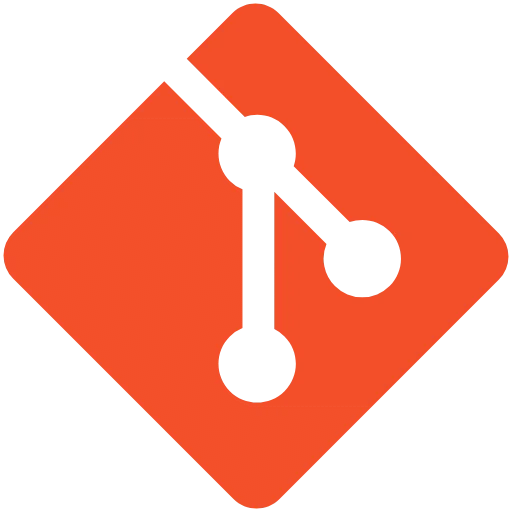

¡Hola! soy Facundo Ramirez.
Analista en Sistemas y
Programador FullStack

PROJECTS


STACK
HTML
CSS
JavaScript
C++
Tailwind CSS

QT
Php

Git

Github
ABOUT ME
Soy estudiante de la Licenciatura en Análisis de Sistemas y actualmente curso mi tercer año de la carrera. Disfruto programar y diseñar soluciones eficientes que optimicen procesos y resuelvan problemas reales. Me apasiona el mundo del desarrollo FullStack, combinando la lógica del backend con la creatividad del frontend para construir experiencias completas.
Creo firmemente que cada línea de código es una oportunidad para mejorar el mundo digital, y mi objetivo es dejar huella creando software que inspire, funcione y perdure.